8. Good Ayre Forum logo¶
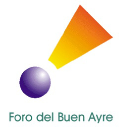We open a new document with Inkscape.
We copied the logo above in Inkscape to serve as a model.
To continue we draw a circle that matches the central circle of the logo.
Don't forget to press the Control key
 so that the circular dimensions are maintained and that the figure does not become an ellipse.
so that the circular dimensions are maintained and that the figure does not become an ellipse.We will change the color of the figure to transparent red so that we can see the lower logo.
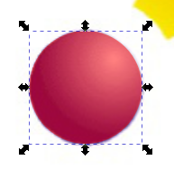Now we duplicate the circle with the Control+D keys or with the
Edit... Duplicatemenu. We change the color of the new circle to blue to be able to distinguish it.To continue we make the circle larger with the editing handles while pressing the Shift and Control keys
+  .
.Pressing Control keeps the proportions and pressing Shift enlarges the circle from the center of the figure.
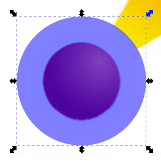Now we duplicate the large circle again and change its color to green to distinguish it.
Let's resize the new circle until it reaches the end of the logo, not forgetting to hold down the Control and Shift keys to maintain the proportions and make it grow from the center.
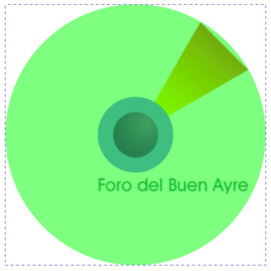At this point we need to change the large circle to a sector of a circle. To achieve this, click on the circles and ellipses icon and in the upper bar we will change the Start value to 300 and the End value to 330 degrees.
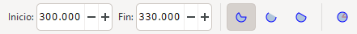The circle has been converted to a circle segment that we can manually adjust with the round handles.
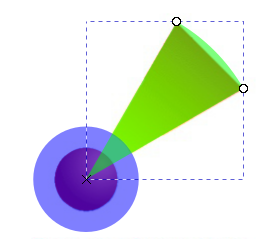Now we need to turn the outer arc into a straight line. With the arc of the circle selected, we choose the
Path... Object to Pathtool from the menu to convert the shape into nodes.We choose the tool to edit nodes
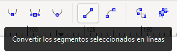 We select the exterior nodes and click on the upper bar the option to convert the selected segments into lines.
We select the exterior nodes and click on the upper bar the option to convert the selected segments into lines.The segment will be as follows.

We will continue to cut out the circle segment with the medium circle. The element that cuts must be on a higher plane, so we must select the blue circle and in the menu choose
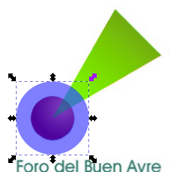Object... Bring to frontNow we select the green segment and the blue circle and in the menu
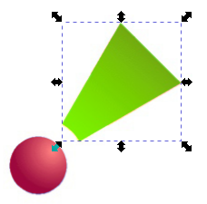Path... DifferenceAt this time we can delete the logo that served as a model.
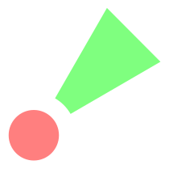Only the work of adding the gradient colors to the drawn figures will remain.
We start with the gradient of the green segment. Select the figure and in the
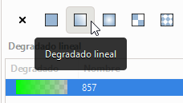Object... Fill and Strokemenu, click on the linear gradient button.Now we choose the tool to create and edit gradients 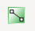 and a line will appear over the figure finished in a square and a circle.
We must move the line to the beginning and end of the gradient.
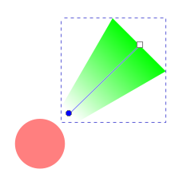To finish we will click on the circle of the gradient line and we will select a yellow color without transparency.
Now we will click on the square at the end of the gradient line and we will select a dark orange color without transparency.
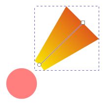Select the circle and in the
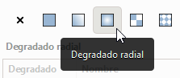Object... Fill and Strokemenu, click on the radial gradient button.Now we choose the tool to create and edit gradients and two lines will appear on the figure ending in circles.
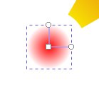We select the square of the gradient and choose a white color without transparency.
Now we select a circle from the gradient and choose a purple color without transparency.
The circle will look like this.
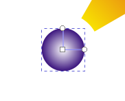Now we will move the points of the gradient to get the effect of a sphere lit from the top right.
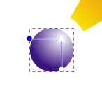To finish the logo we select all the elements and group them with the
Object... Groupmenu tool